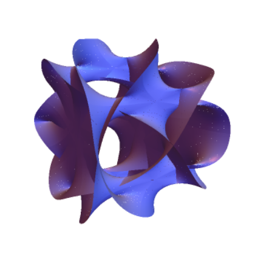

A study group for PhD students on all aspects of mirror symmetry.
From May to June 2024, we will be meeting every Friday 3 - 5pm in
Huxley 139, Imperial College London, with the exception of 14th June, when we are in
Huxley 642 instead.
For more information, or if you would like to join, please send an email to:
aporva dot varshney dot 22 at ucl dot ac dot uk
On days without speakers, we may watch a lecture together instead. Some suggestions are given below.